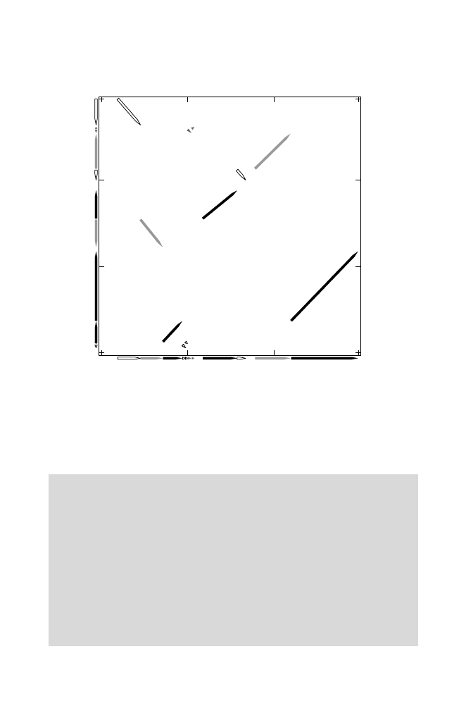

5.4 Applications to Complex Genomes
137
0 Mb
50 Mb
100 Mb
149 Mb
0 Mb
50 Mb
100 Mb
147 Mb
Human Chromosome X
Mouse Chromosome
X
Fig. 5.3.
Synteny blocks shared by human and mouse X chromosomes. The arrow-
head for each block indicates the direction of increasing coordinate values for the
human X chromosome. Reprinted, with permission, from Pevzner P and Tesler G
(2003)
Genome Research
13:37–45. Copyright 2003 Cold Spring Harbor Laboratory
Press.
y<-c(1:100)
We now transform genome
y
into genome
y4
through a series of four reversal
steps of our choice, saving each intermediate genome
y1
,
y2
, and
y3
.
y2
is
produced by applying a second reversal to
y1
, which resulted from the first
reversal, and so on.
y1<-y
y1[11:75]<-y1[75:11]
#Reversal of interval 11 to 75 inclusive in y
y2<-y1
y2[15:30]<-y2[30:15]
#Reversal of interval 15 to 30 inclusive in y1